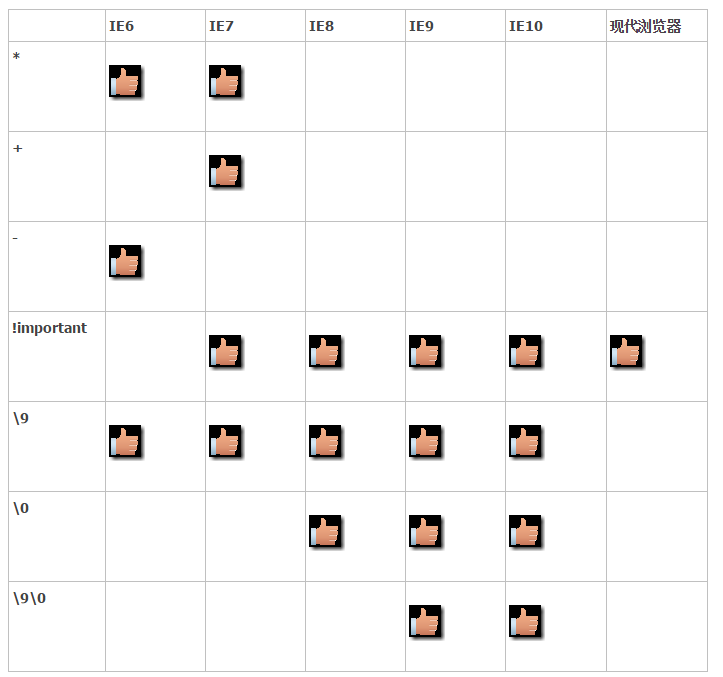
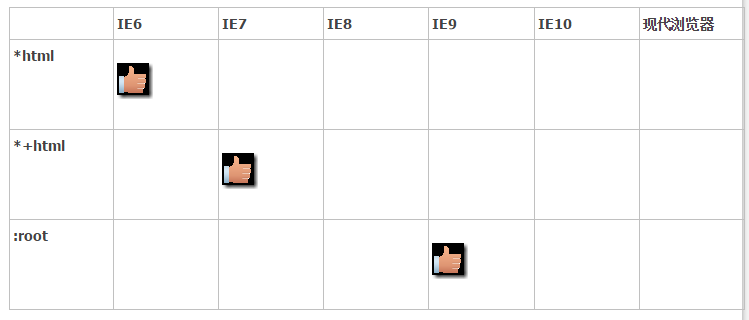

CSS hack解决浏览器兼容性问题
由于不同的浏览器，甚至同一浏览器的不同版本对CSS的解析认识不一样，导致生成的页面效果不一致，写出针对不同浏览器CSS code就称为CSS hack。
CSS内部hack
在CSS3中常见一些这样的写法
因为CSS3目前标准还没有统一，各个浏览器都有自己的表现方式，甚至有的实现，有的未实现，在前面加一些前缀以表示支持某个特定浏览器，这也是CSS 内部hack的基本原理，向上面这些简单易懂，但是真正的CSS hack 远远不止于此，因为有不死的IE6及其各种奇葩的兄弟版本。
CSS 内部hack 语法是这样的：selector{<hack>?property:value<hack>?;} ，上面代码所示的是在属性名称之前的hack。
例1：属性前面加个“*”这样的写法只会对IE6、7生效，其它版本IE及现代浏览器会忽略这条指令（没有特殊说明，本文所有hack都是指在声明了DOCTYPE的文档的效果）
1*background-color:green; /*仅IE6、7下有效*/例2：在属性值后面加上
\9，在IE下都支持；在属性值后面加上\0，IE8、9、10支持；在属性值后加上\9\0，IE9、10支持1background-color:green\9;
CSS 内部hack一览

选择器hack
选择器hanck主要是针对IE浏览器，其实并不怎么常用，语法是这样的：<hack> selector{ sRules }

针对IE9的hack可以这么写
CSS条件注释(常用)
HTML头部引用就比较特殊了，类似于程序语句，只能使用在HTML文件里，而不能在CSS文件中使用，并且只有在IE浏览器下才能执行，这个代码在非IE浏览下非单不是执行该条件下的定义，而是当做注释视而不见。
lte：就是Less than or equal to的简写，也就是小于或等于的意思。
lt ：就是Less than的简写，也就是小于的意思。
gte：就是Greater than or equal to的简写，也就是大于或等于的意思。
gt ：就是Greater than的简写，也就是大于的意思。
! ：就是不等于的意思，跟javascript里的不等于判断符相同。
书写顺序
看个例子：
如果希望DIV在IE6上是红色，其它是绿色，上面的写法可不可以呢？试一下发现所有浏览器上都是绿色，因为在IE6解析的时候，第一句能够识别，背景设为红色，但是第二句所有浏览器都识别，IE6也不例外，背景颜色又被设为绿色，所以得反过来写
总结出的规律就是：先一般，再特殊。有兴趣的同学可以试试试试下面CSS，看看和你想的效果是否一样：
Ps:CSS hack的写法在迫不得已的情况下才考虑使用